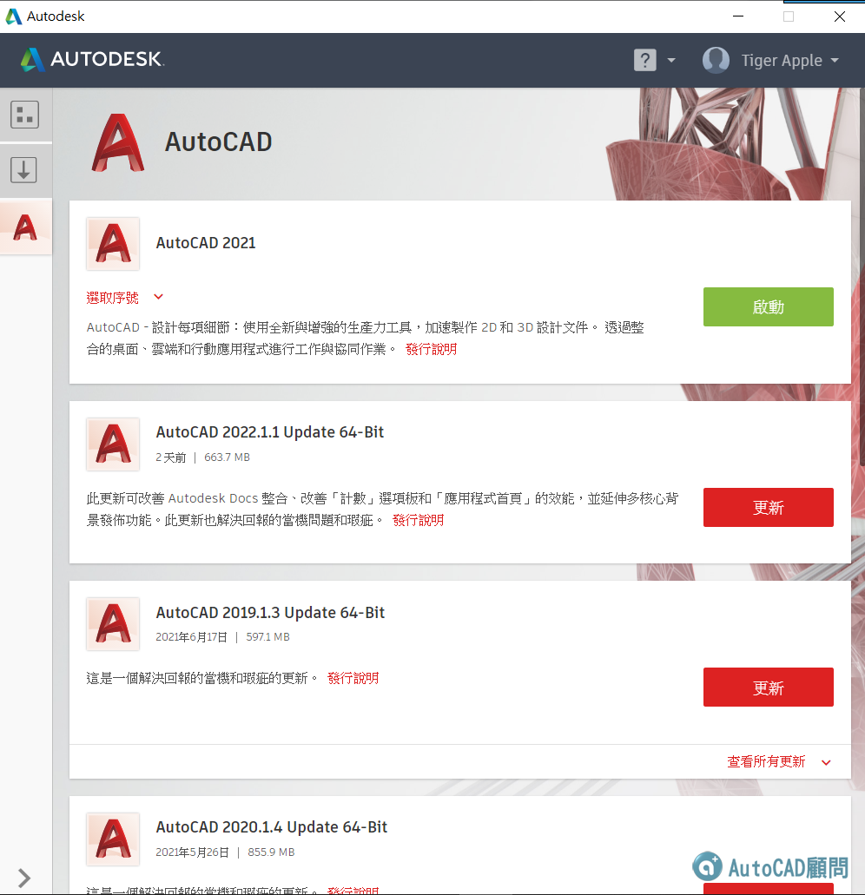

AutoCAD 2018 以後版本須使用
以後版本須使用
1. Autodesk 桌面應用程序下載
2. 訂閱用戶(租賃版)後台下載

20200110補充:
[安裝]Autodesk桌面應用程序
歐特克AutoCAD的服務與支持
AutoCAD Services & Support
https://knowledge.autodesk.com/support/autocad/downloads
Updates & Service Packs
AutoCAD 2010
32 http://images.autodesk.com/adsk/files/autocad2010update2.exe
64 http://images.autodesk.com/adsk/files/autocad2010update2x64.exe
AutoCAD 2011
32 http://images.autodesk.com/adsk/files/AutoCAD2011Update2.exe
64 http://images.autodesk.com/adsk/files/AutoCAD2011Update2x64.exe
AutoCAD 2012
AutoCAD 2014
AutoCAD 2015
AutoCAD 2016
AutoCAD 2017
32 http://up.autodesk.com/2017/ACD/acad2017_sp1_32bit.msp
64 http://up.autodesk.com/2017/ACD/acad2017_sp1_64bit.msp
AutoCAD 2018 更新說明: https://knowledge.autodesk.com/sites/default/files/file_downloads/AutoCAD_2018.1.2_Update_Readme_Enu.htm
AutoCAD 2019 更新說明: https://knowledge.autodesk.com/support/autocad/learn-explore/caas/sfdcarticles/sfdcarticles/Update-2019-1-2-available-for-AutoCAD-and-AutoCAD-LT.html
AutoCAD 2020 更新說明: https://help.autodesk.com/view/ACD/2020/CHT/?guid=AutoCAD_ReleaseNotes_autocad_2020_updates_autocad_2020_1_2_fixed_issues_html
AutoCAD 2021 更新說明: https://knowledge.autodesk.com/support/autocad/learn-explore/caas/CloudHelp/cloudhelp/2021/ENU/AutoCAD-ReleaseNotes/files/AUTOCAD-2021-UPDATES-html.html
AutoCAD 2023 AutoCAD 2024